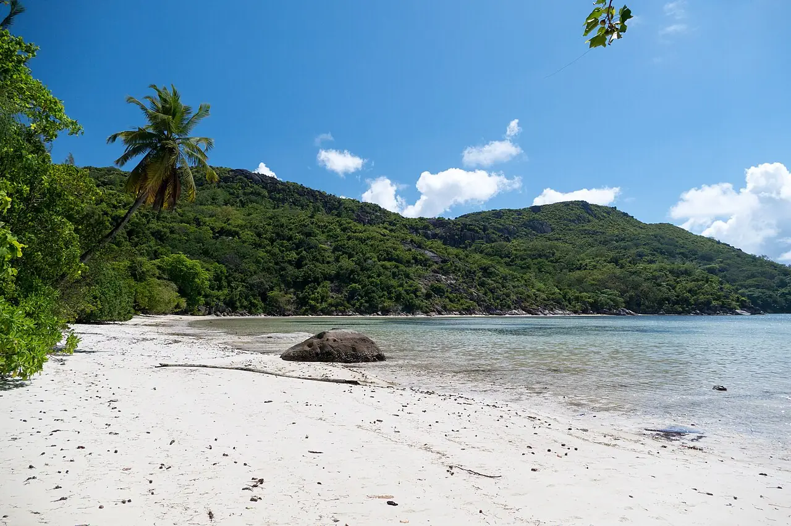

Baie Ternay
Mahé, Seychelles · snorkeling, baignade

Baie en fer à cheval à la pointe nord-ouest de Mahé, protégée en parc marin national. Coraux, tortues et poissons de récif s’y observent près du bord, souvent lors d’excursions en bateau.
- Lieu
- Mahé, Seychelles
- Niveau
- Débutant
- Activités
- snorkeling, baignade
- Type d'eau
- Mer / océan
- Coordonnées
- -4.64, 55.38 (position approximative du secteur)
Dangers à connaître
- Mer plus agitée pendant la mousson de nord-ouest (décembre à mars).
- Coraux fragiles : ne marche pas sur le récif.
Le conseil d'Ocean Buddy
Pêche et prélèvements y sont interdits : renseigne-toi sur l’accès (souvent par bateau) et les droits d’entrée du parc.
Ouvrir dans Ocean Buddy Télécharger sur l'App Store
Source : Fiche Ocean Buddy · septembre 2026 · à vérifier localement.